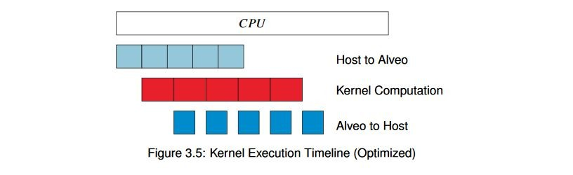

2020.2 Vitis ™ - ランタイムおよびシステムの最適化xilinx.com の Vitis ™開発環境を参照 |
概要¶
前の例では、データがあるサイズを超えると、アプリケーションとのデータ転送がボトルネックになりました。 PCIe 上での転送には通常一定の時間がかかるので、wide_vadd カーネルのインスタンスを 4 つ作成し、それらすべてをエンキューして、大型のバッファーを並列処理すれば良いと考えるかもしれません。
これが、PCIe を介して大量のデータを広帯域幅のメモリに転送し、複数のエンベデッド プロセッサのアレイを使用して、データを非常に幅広いパターンで処理するという従来の GPU モデルです。
FPGA では通常、この問題を解決するのに別の方法を使用する方が有益です。 各クロックで 512 ビットのデータをカーネルがフルに処理できる場合、最大の問題は並列処理ではなく、その処理能力に見合うようにデータを転送できるかどうかです。 DDR とのデータ転送にバーストを使用すると、帯域幅の上限にすぐに達してしまいます。複数のコアを並列に配置して同じバッファーで継続的に並行処理すると、帯域幅の競合が発生し、 これらのコアが低速になります。これでは逆効果です。
どうすればよいでしょうか。 wide_vadd カーネルはアクセラレーションには適していないことを思い出してください。 計算が単純すぎるので、FPGA の並列処理機能を活用できません。A + B だけのアルゴリズムでは、できることは限られています。このような単純なアルゴリズムであっても、最適化手法をいくつか紹介することはできます。
そのため、wide_vadd カーネルのハードウェア デザインに少し工夫を加えています。 バスからの生のデータを使用する代わりに、FPGA のブロック RAM (非常に高速な SRAM) を使用してデータをバッファリングし、演算を実行しています。 これにより連続するバースト間に少し時間を吸収できるので、それを利用します。
前の例では、インターフェイスを複数の DDR バンクに分割したことを思い出してください。 PCIe の帯域幅は、Alveo ™ データセンター アクセラレータ カード上の DDR メモリの帯域幅の合計よりもかなり狭く、2 つの異なる DDR バンクにデータを転送しているため、これらの DDR バンク間でインターリーブが実行されます。 その隙間に処理を挿入することが可能なので、データ転送が完全に完了するのを待つのではなく、データが到達したらすぐに処理を開始し、データを戻すことができます。 次のようにするのが目標です。

バッファーをこのように分割し、適切な分割数を選択することにより、アプリケーションの実行時間と転送時間のバランスを取ることができ、スループットが大幅に向上します。 同じハードウェア カーネルを使用して、これをホスト コードで設定するのに何が必要かを見てみましょう。
キー コード¶
コードのアルゴリズム フローはほぼ同じです。 転送をエンキューする前に、バッファーをループ処理し、それを分割します。 ただし、いくつかの一般的な規則に従う必要があります。 まず、効率よく転送するため、バッファーを境界に揃えて分割するようにします。次に、分割しても意味がないような小さなバッファーは分割しないようにします。 バッファーの数を設定するため定数 NUM_BUFS を定義し、バッファーを分割するための新しい関数を記述します。
int subdivide_buffer (std::vector<cl::Buffer> ÷d,
cl::Buffer buf_in,
cl_mem_flags flags,
int num_divisions)
{
// Get the size of the buffer
size_t size;
size = buf_in.getInfo<CL_MEM_SIZE>();
if (size / num_divisions <= 4096) {
return-1;
}
cl_buffer_region region;
int err;
region.origin = 0;
region.size = size / num_divisions;
// Round region size up to nearest 4k for efficient burst behavior
if (region.size % 4096 != 0) {
region.size += (4096 - (region.size % 4096));
}
for (inti = 0; i < num_divisions; i++) {
if (i == num_divisions - 1) {
if ((region.origin + region.size) > size) {
region.size = size - region.origin;
}
}
cl::Buffer buf = buf_in.createSubBuffer(flags,
CL_BUFFER_CREATE_TYPE_REGION,
®ion,
&err);
if (err != CL_SUCCESS) {
returnerr;
}
divided.push_back(buf);
region.origin += region.size;
}
return0;
}
ここでは、バッファーを NUM_BUFS で設定した回数だけループ処理し、作成する各サブバッファーに対して cl::Buffer.createSubBuffer() を呼び出しています。 cl_buffer_region は、作成するサブバッファーの開始アドレスおよびサイズを定義します。 サブバッファーはオーバーラップさせることは可能ですが、ここではオーバーラップさせません。
次に示すように、複数の演算をエンキューするために使用できる cl::Buffer オブジェクトのベクターを戻します。
int enqueue_subbuf_vadd(cl::CommandQueue &q,
cl::Kernel &krnl,
cl::Event &event,
cl::Buffer a,
cl::Buffer b,
cl::Buffer c)
{
// Get the size of the buffer
cl::Event k_event, m_event;
std::vector<cl::Event> krnl_events;
static std::vector<cl::Event> tx_events, rx_events;
std::vector<cl::Memory> c_vec;
size_t size;
size = a.getInfo<CL_MEM_SIZE>();
std::vector<cl::Memory>in_vec;
in_vec.push_back(a);
in_vec.push_back(b);
q.enqueueMigrateMemObjects(in_vec, 0, &tx_events, &m_event);
krnl_events.push_back(m_event);
tx_events.push_back(m_event);
if (tx_events.size() > 1) {
tx_events[0] = tx_events[1];
tx_events.pop_back();
}
krnl.setArg(0, a);
krnl.setArg(1, b);
krnl.setArg(2, c);
krnl.setArg(3, (uint32_t)(size /sizeof(uint32_t)));
q.enqueueTask(krnl, &krnl_events, &k_event);
krnl_events.push_back(k_event);
if (rx_events.size() == 1) {
krnl_events.push_back(rx_events[0]);
rx_events.pop_back ();
}
c_vec.push_back (c);
q.enqueueMigrateMemObjects(c_vec,
CL_MIGRATE_MEM_OBJECT_HOST,
&krnl_events,
&event);
rx_events.push_back (event);
return 0;
}
この新しい関数では、基本的に以前の実行と同じイベント シーケンスになります。
ホスト メモリから Alveo メモリへのバッファーの移動をエンキューします。
カーネル引数を現在のバッファーに設定します。
カーネルの実行をエンキューします。
結果を戻す転送をエンキューします。
ただし、今回は実際にキュー方式で順次実行している点が違います。 これまでの例とは異なり、イベントが完全に終了するまで待機しません。待機すると、せっかくのパイプライン処理が無駄になるからです。 そこでこの例では、イベント ベースの依存関係を利用します。 まず、cl::Event オブジェクトを使用して、イベントを実行する前に完了する必要のあるイベントを定義するイベントのチェーンを構築します。リンクされていないイベントは、いつでもスケジュールできます。
カーネルの複数実行をエンキューし、すべてが完了するのを待ちます。これにより、さらに効率の良いスケジューリングになります。 このキュー方式を使用して例 4 と同じ構造を構築すると、そのときと同じ結果になります。それは、データをすべて転送する前に、処理を安全に開始できるかどうかはランタイムにはわかり得ないからです。 何が実行可能で実行不可能かを設計者がスケジューラに指示する必要があります。
そして最後に、もう 1 つ重要な設定しておかないと、上記の操作はどれも発生しません。サブバッファーを作成するときに CL_QUEUE_OUT_OF_ORDER_EXEC_MODE_ENABLE フラグを渡して、アウト オブ オーダー コマンド キューを使用するように指定する必要があります。
この例のコードは、それ以外は前のコードと似ています。 main() から直接 API を読み出す代わりに、これらの関数を呼び出すようになりますが、それ以外は同じです。
ここで興味深いのが、バッファー c をユーザー空間にマップし直す際に、個々のサブバッファーを処理する必要がないということです。 これらのサブバッファーは既にホストメモリに戻されており、サブバッファーを作成したときにその基になるポインターは変更されないので、サブバッファーがあっても、元の親バッファーを使用すればよいのです。
アプリケーションの実行¶
XRT ランタイムが初期化されたら、ビルド ディレクトリから次のコマンドを実行してアプリケーションを実行します。
./05_pipelined_vadd alveo_examples
プログラムにより、次のようなメッセージが表示されます。
-- Example 5: Pipelining Kernel Execution --
Loading XCLBin to program the Alveo board:
Found Platform
Platform Name: Xilinx
XCLBIN File Name: alveo_examples
INFO: Importing ./alveo_examples.xclbin
Loading: ’./alveo_examples.xclbin’
-- Running kernel test with XRT-allocated contiguous buffers and wide VADD (16 values/clock)
OCL-mapped contiguous buffer example complete!
--------------- Key execution times ---------------
OpenCL Initialization: 263.001ms
Allocate contiguous OpenCL buffers: 915.048 ms
Map buffers to userspace pointers: 0.282 ms
Populating buffer inputs: 1166.471 ms
Software VADD run: 1195.575ms
Memory object migration enqueue: 0.441ms
Wait for kernel to complete: 692.173 ms
次の表に、結果を前回の実行と比較します。
| 操作| 例 4| 例 5| Δ4→5 |———-|:———-:|:———-:|:———-: | ソフトウェア VADD| 820.596 ms| 1166.471 ms| 345.875 ms | ハードウェア VADD (合計)| 1184.897 ms| 692.172 ms| -492.725 ms | ΔAlveo→CPU| 364.186 ms| -503.402 ms| 867.588 ms
今回は目的を果たすことができました。マージンを見てください。
これが逆転することはあり得ません。 これで演習は終わりにしてもよいでしょう。もうほかに問題が隠れていることはないでしょう。
追加演習¶
この演習に、追加で次のことを試してみてください。
バッファーのサイズを変えてみます。 この追加演習でも CPU の方が速くなる点はありますか。
もう一度トレースを記録してみましょう。違いはありますか。 サブバッファーの数は実行時間にどのように影響しますか。
学習ポイント¶
データ転送およびコマンド キューを合理的に管理すると、大幅な高速化につながる可能性があります。
Copyright© 2019-2021 Xilinx
この資料は 2021 年 1 月 22 日時点の表記バージョンの英語版を翻訳したもので、内容に相違が生じる場合には原文を優先します。資料によっては英語版の更新に対応していないものがあります。 日本語版は参考用としてご使用の上、最新情報につきましては、必ず最新英語版をご参照ください。